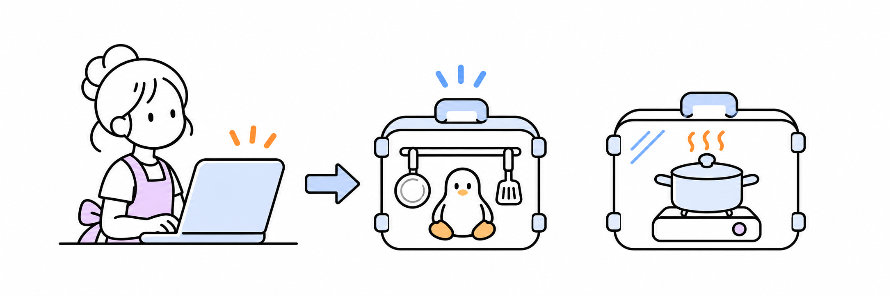
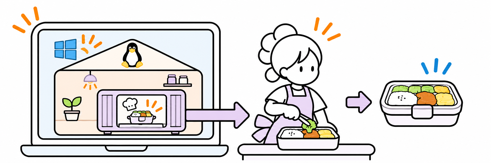

阿寶用的是 Mac。阿蘭說：「Linux 容器要用 Linux 的廚房。Mac 和 Windows 家裡沒有，就只好在家裡先搭一間小 Linux 廚房（虛擬機），再在裡面煮。」

Mac 和 Windows 沒有 Linux 核心，先墊一層 Linux 環境，容器才能在裡面運作。
🗺️ 圖解｜Mac 和 Windows 要墊一層
容器靠的是 Linux 核心內建的兩個機制（〈容器〉說過：一個讓你只看得到自己的東西，一個限制你能吃多少資源）。在 Linux 上這兩個機制本來就在，Docker Engine 直接用就好；在 macOS 和 Windows 上沒有 Linux 核心，所以得先有一個 Linux 環境，容器再跑在那裡面。
要分清楚的是「誰需要 Linux」：需要 Linux 核心的是 Linux 容器，不是 Docker Engine 這支程式本身。Docker Engine 透過 Docker Desktop 在 Windows、macOS、Linux 上都取得到，而且 Windows 上還有另一條跑 Windows 容器的路線出處。對 Mac 和 Windows 上要跑 Linux 容器的人來說，結論一樣：中間會有一層 Linux，只是你通常感覺不到。那一層長什麼樣，〈Docker Desktop 與 Colima〉拆開來看。
📝 查證更正：原筆記寫「Docker Engine 只能 run 在 Linux 環境!!」（連寫三次），查證後更正：Docker 官方文件寫 Docker Engine 透過 Docker Desktop 也能在 Windows 與 macOS 上取得；Windows 另有跑 Windows 容器的路線。「需要 Linux 核心」講的是 Linux 容器，不等於 Docker Engine 只存在於 Linux
docker version 會分兩段印出來：上面是 Client（你的 CLI），下面是 Server（Docker Engine）。只看到 Client 那一段，就是 Engine 還沒起來——在 Mac 和 Windows 上通常是那層 Linux 還沒開。docker info 則列出現在有幾個容器、幾個映像檔、資料存在哪裡。
docker ＋ 你要管的東西 ＋ 要做的動作 ＋ 選項
docker image ls # 管的是映像檔，動作是列出來
docker container ls # 管的是容器，動作是列出來
docker container stop web # 管的是容器，動作是停掉名叫 web 的那個
# 只列還在跑的
docker container ls
# 連停掉的一起列（-a 就是 all）
docker container ls -a
# 看紀錄，-f 是持續跟著跑
docker container logs web
docker container logs -f web
# 停止、重開、刪除
docker container stop web
docker container start web
docker container rm web
docker container stop $(docker container ls -aq) # -q 只印 ID
docker system prune 這類指令一次會清掉多種「目前沒在用」的東西——停掉的容器、沒人掛的網路、以及懸空的映像檔（dangling image：沒有任何標籤指著它的那些，通常是重建之後被頂掉的舊層）。映像檔那一項預設只清懸空的；加上 -a 才會連「有標籤但目前沒有容器在用」的映像檔一起刪（-a 就是刪掉所有沒在用的映像檔，不只懸空的）。出處 在還不確定它會掃到什麼之前，先用 ls 把要刪的列出來看過，再動手。
另外有一個順序上的坑：ARG 是唯一可以寫在 FROM 前面的指令，ENV 不行出處。而且寫在 FROM 前面的 ARG 只能用在 FROM 那一行，要在後面用得再宣告一次。
📝 查證更正：原筆記第四章的 Spring Boot 範例把三行 ARG 和三行 ENV 寫在 FROM 之前，查證後更正：Docker 官方文件明寫「ARG is the only instruction that may precede FROM in the Dockerfile」，ENV 不能放在 FROM 前面
〈Docker 上手〉提過：Linux 容器要的是 Linux 核心。在 Mac 和 Windows 上，只有第一棒（你打的 docker 指令）留在自己的作業系統上，後面三棒都在那台 Linux 裡面——包括 dockerd。所以問題不是「Docker 裝不起來」，是「要先生出一個 Linux 給後面三棒站」。
【Windows 路線】
Docker Desktop 借 WSL 2 那層 Linux
🎬 寶來故事
「Windows 上呢？」阿蘭說：「Docker Desktop 像一站式的廚房套裝：爐子、鍋子、抽油煙機一次給你；在 Windows 上它借用 WSL 2 這間現成的 Linux 小廚房。」

Docker Desktop 透過 WSL 2 墊出一層 Linux，容器就在那間小廚房裡運作。
🗺️ 圖解｜Windows 上的 Docker Desktop
Docker Desktop 是一站式的裝法：圖形介面、Docker CLI、容器引擎、Compose、網路轉送、檔案共享，一次包給你。在 Windows 上它用 WSL 2（Windows 內建的 Linux 子系統）當地基。
Windows 終端機
↓ docker 指令
Docker Desktop
↓
WSL 2 的 Linux 環境
↓ dockerd → containerd → runc
Linux 容器
這一層很容易被誤會成你自己在 Windows 上裝的那個 Linux 發行版。實際上 Docker Desktop 跑在它自己的 docker-desktop 發行版裡，和你裝的其他 WSL 發行版互相隔離。出處 所以就算你在 Windows 上裝了 Ubuntu，Docker 也不是跑在那個裡面。
Colima 自己不開虛擬機，它叫 Lima（一個在 macOS 上開 Linux 虛擬機的工具）去開。啟動時可以指定要給多少資源：
colima start --cpu 4 --memory 8
數字照你電腦的容量調，不要把資源全部塞給虛擬機。
三個容易記錯的細節
Docker Desktop for Mac 的虛擬機管理器現在有兩個選項：Docker 自己做的 Docker VMM，和 Apple 的 Virtualization framework。Docker VMM 的切換步驟在 Mac 這邊只有 Apple Silicon 有（Intel Mac 沒有這一項；Windows 另有自己的分頁），而舊的 HyperKit 只剩 Intel Mac 能用、已被標為棄用（deprecated），建議改用 Apple 的 Virtualization framework。出處
📝 查證更正：原筆記的 Dockerfile 用 openjdk:17-jre-alpine，查證後更正：Docker Hub 上的 openjdk 官方映像頁面寫「This image is officially deprecated and all users are recommended to find and use suitable replacements ASAP」，建議改用 eclipse-temurin、amazoncorretto、ibm-semeru-runtimes、ibmjava、sapmachine
📝 查證更正：原筆記寫「Secrets 在 K8S 中安全地儲存了敏感資料，例如 API Keys、密碼或是認證……但是用 base64 編碼以及是專門為安全敏感性配置所設計」，查證後更正：Kubernetes 官方文件的警語寫 Secret 預設是「stored unencrypted in the API server's underlying data store (etcd)」，任何有 API 存取權或 etcd 存取權的人都讀得到；base64 只是編碼不是加密
Pod 一直起不來。阿蘭說：「像便當沒送到：先看狀態（卡在哪）→ 再看事件（為什麼，像『沒有空桌』『找不到料理包』）→ 最後才看廚師的工作日誌（logs）。」
Pod 出問題時，先看目前狀態，再看事件，最後才深入看紀錄。
🗺️ 圖解｜Pod 起不來的排查順序
kubectl get pods
kubectl describe pod POD名稱
kubectl logs POD名稱
kubectl get events --sort-by=.metadata.creationTimestamp
kubectl rollout status deployment/demo-app
Pod 起不來，先分清楚是哪一種：排不進去（沒有節點裝得下）、映像檔拉不到（名字打錯或沒權限）、程式自己崩潰、還是健康檢查沒過。這四種的處理方向完全不一樣，describe 最下面那段事件通常直接告訴你是哪一種。
Service 連不到，先核對標籤有沒有對上、targetPort 對不對、Pod 是不是真的 Ready——不要一上來就砍掉重建整個叢集。
看「這個 Service 到底有沒有後端」，以前用 kubectl get endpoints。Kubernetes 從 v1.33 起把 Endpoints 這個 API 標為過時，改用 EndpointSlice，讀寫舊的會收到警告。出處 現在請改打 kubectl get endpointslices——EndpointSlice 就是「這個 Service 目前實際指到哪幾個 Pod」的那份清單。
oc get pods
oc get services
oc get endpointslices # 這個 Service 到底有沒有後端
oc describe service blog
Service 沒有後端時，一樣先比對 selector 和 Pod 的 labels，再確認 Pod 真的 Ready——沒 Ready 的 Pod 不會被算進去。以前用 oc get endpoints 看後端；Kubernetes 從 v1.33 起把 Endpoints 標為過時，改用 EndpointSlice。出處
Linux Container（LXC）是一種作業系統層的虛擬化技術，直接建在核心本來就有的那些隔離能力上。它是 Linux 核心隔離功能的使用者空間介面，用到的核心能力裡有 Kernel namespaces 和 CGroups（control groups）——和〈容器〉「容器就是把兩個開關打開」講的是同一件事。出處
PodDisruptionBudget（PDB，中斷預算）限制一個多副本應用程式因自願中斷而同時倒下的 Pod 數。出處
apiVersion: policy/v1
kind: PodDisruptionBudget
metadata:
name: teller-pdb
spec:
minAvailable: 3 # 自願中斷時，至少留 3 份可服務
selector:
matchLabels:
app: teller
---
$ kubectl get pdb # 4 份都就緒時
teller-pdb 最少可用=3 允許中斷=1 ← 現在允許搬走 1 份
# dp2-control-plane 是這個 kind 叢集唯一的節點
$ kubectl drain dp2-control-plane --ignore-daemonsets --pod-selector=app=teller --timeout=40s（節錄）
node/dp2-control-plane cordoned
evicting pod default/teller-845ff5cf4d-ntwhz
...
error when evicting pods/"teller-845ff5cf4d-2vl52" -n "default" (will retry after 5s): Cannot evict pod as it would violate the pod's disruption budget.
pod/teller-845ff5cf4d-cttkk evicted ← 只搬走 1 份
...
$ kubectl get pods -l app=teller
teller-845ff5cf4d-2vl52 1/1 Running
teller-845ff5cf4d-mxpjc 1/1 Running
teller-845ff5cf4d-n5btc 0/1 Pending ← 補的那份沒地方排（唯一的節點被封鎖了）
teller-845ff5cf4d-ntwhz 1/1 Running
$ kubectl get pdb
teller-pdb 最少可用=3 允許中斷=0 ← 剩 3 份可服務，一份都不能再搬
kubectl drain（清空節點：先封鎖、再把上面的 Pod 驅逐走）透過驅逐 API 送請求，請求可能暫時被拒絕，工具會定期重試所有失敗的請求，直到節點清空或逾時。出處 實驗是單節點叢集，被搬走的那份沒有別的節點可去，所以 drain 永遠等不到第二份；多節點叢集裡，新的一份在別台就緒之後，預算又空出來，drain 就能繼續一份一份搬。
幾個邊界：
刪除 Deployment 或 Pod 會繞過 PDB
非自願中斷 PDB 擋不住，但會算進預算
滾動更新時被換掉的 Pod 會算進預算，但 Deployment 做滾動更新不受 PDB 限制，換版的節奏由 Deployment 自己的設定決定出處
$ kubectl get pod -n bank -l app=client
NAME READY STATUS RESTARTS AGE
client-5d4dc5766c-ltt9j 2/2 Running 0 46s
$ kubectl get pod -n bank -l app=client -o jsonpath="{.items[0].spec.containers[*].name}"
curl
$ kubectl get pod -n bank -l app=client -o jsonpath="{range .items[0].spec.initContainers[*]}{.name}{\" restartPolicy=\"}{.restartPolicy}{\"\n\"}{end}"
istio-init restartPolicy=
istio-proxy restartPolicy=Always
$ kubectl get pod -n legacy -l app=client
NAME READY STATUS RESTARTS AGE
client-5d4dc5766c-xv68c 1/1 Running 0 46s
同一份 Deployment，bank 那邊是 2/2、legacy 是 1/1：多出來的就是 sidecar（邊車，掛在主程式旁邊、跟它同生共死的輔助容器），也就是 istio-proxy 這個 Envoy。sidecar 不是自己寫進 YAML 的，是 Pod 建立時被 Istio 改寫規格加進去的，這叫注入。所以標籤要在 Pod 建立之前貼好；已經在跑的 Pod 要重啟才會被注入。出處
加密之外，mTLS 帶來的是身分。把 helloworld 代理手上的憑證拿出來看（proxy-config secret 的輸出省略了 SERIAL NUMBER 那一欄，所以欄位沒對齊）：
$ istioctl proxy-config secret helloworld-v1-5bb8cc5b68-ptj54 -n bank
RESOURCE NAME TYPE STATUS VALID CERT NOT AFTER NOT BEFORE
default Cert Chain ACTIVE true 2026-10-03T20:53:43Z 2026-10-02T20:51:43Z
ROOTCA CA ACTIVE true 2036-09-29T16:13:34Z 2026-10-02T16:13:34Z
$ （把 default 憑證取出來看）openssl x509 -noout -ext subjectAltName -dates
X509v3 Subject Alternative Name: critical
URI:spiffe://cluster.local/ns/bank/sa/default
notBefore=Oct 2 20:51:43 2026 GMT
notAfter=Oct 3 20:53:43 2026 GMT
〈部署策略與探針〉的原生金絲雀（canary，先讓一小部分流量試新版）比例只能靠 Pod 數湊：要一成就要九比一的份數。網格把比例寫在規則裡。需要兩份 YAML：DestinationRule 把一個服務的 Pod 依標籤分成幾組（subset），VirtualService 寫流量怎麼分給這些組，權重決定每個版本收到的流量比例。出處
「GCP 的 Cloud Run 不一樣。」胡經理說：「Cloud Run 像小巴士：一台車可以同時載好幾組客人（一個執行個體處理多個請求），比計程車省車。」
Cloud Run 讓一個執行個體同時服務多個請求。
🗺️ 圖解｜一個執行個體處理多個請求
Cloud Run 是 Google Cloud 的做法：全代管的應用平台，在 Google 的基礎設施上跑你的程式、函式或容器，只要能做成容器映像檔，什麼語言都可以。出處 你交的是容器，所以要遵守它的容器契約：在 0.0.0.0 的指定連接埠上聽請求，不應該聽在 127.0.0.1，預設送到 8080，Cloud Run 會用 PORT 環境變數告訴你是哪個埠。出處
重用的規則跟 Lambda 很像：不能假設請求之間會保留狀態，但執行個體會被重用，所以昂貴的物件可以放在全域範圍。下面的 Java 範例取自 Cloud Run 文件，註解多了一句 Lambda 沒有的警告：
public class Scopes implements HttpFunction {
// Global (instance-wide) scope
// This computation runs at instance cold-start.
// Warning: Class variables used in functions code must be thread-safe.
private static final int INSTANCE_VAR = heavyComputation();
…
}